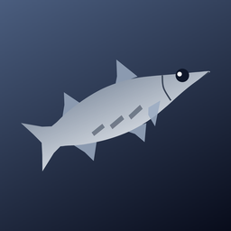
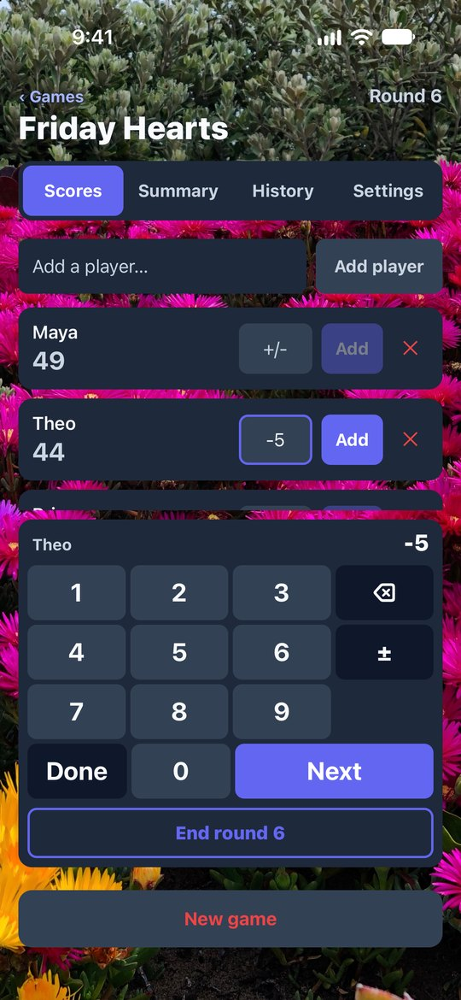
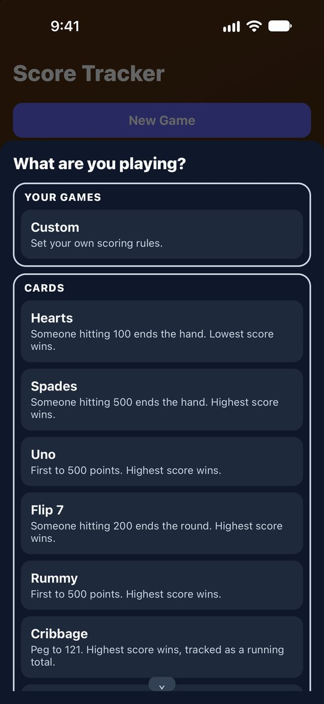
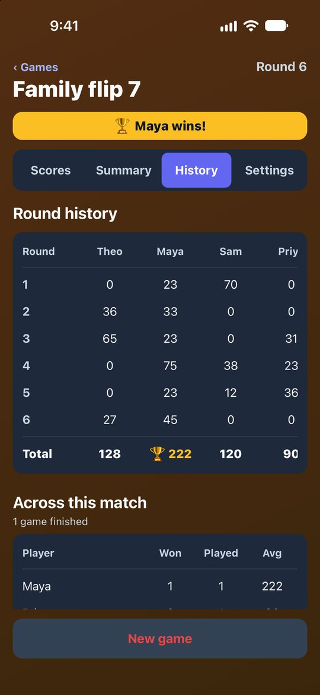
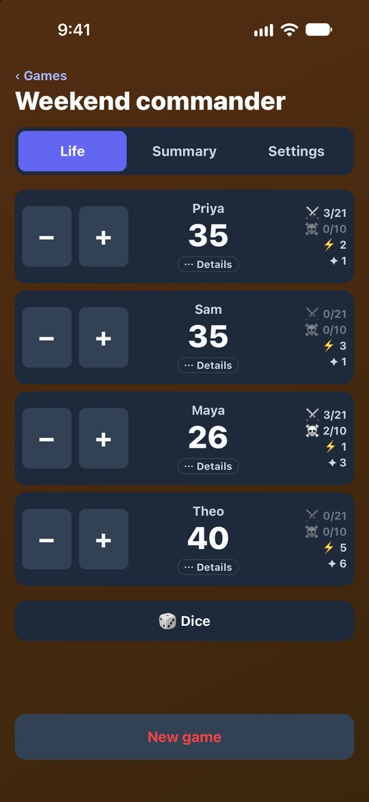

Score Tracker
Keep score for card games, dice games, dominoes, darts, mini golf and
basketball — or any game with your own rules.
No ads. No accounts. No internet.

Keep score for card games, dice games, dominoes, darts, mini golf and
basketball — or any game with your own rules.
No ads. No accounts. No internet.
Score Tracker keeps everyone's score while you play and then gets out of the way. No sign-up, no pop-ups, and nothing to load.
Hearts, Spades, Uno, Flip 7, Rummy, Cribbage, Golf, Darts, Mini Golf, Basketball, three ways to score dominoes, and the dice games Pig, Farkle, Bunco, Shut the Box and Chicago arrive with the right rules. Or set your own.
A keypad made for scores, with a minus key and Next to move round the table. Basketball, Cribbage, Bunco and All Fives add one-tap buttons for their usual points.
End a round and the totals bank into a per-round table, so you can always see how the game got here.
Save target scores, round settings and how the winner is decided as your own game. Create and edit them right from the home screen, then reuse them forever.
Commander, Standard, Brawl and Two-Headed Giant, with commander damage, poison, energy and experience.
Name a game and it saves as you play, or keep nothing at all. Send the final standings as a message, or as a score card that shows off the winner.
Pick a background color, or put your own photo behind the scoreboard, dimmed as much or as little as you like.
Turn your phone sideways to keep every player beside the keypad. On an iPad it spreads into two columns.
Roll a die, flip a coin, or let the app pick who goes first. The screen stays awake between turns. Light, dark, or follow your phone.
Everything runs on your device.

Keep score for any game
Games already set up
Every round, banked
Life totals and commander damageScore Tracker contains no code that connects to the internet, so it has no way to send your data off your phone. On Android it goes further: the app doesn't even have permission to go online, so Android itself stops it connecting anywhere.